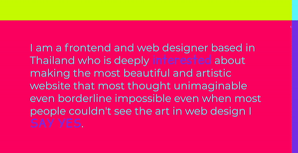

✨ a s s i g n m e n t o n e ✨
<🤍 Palat Tuntaopas Portfolio 🤍>
The first thing that I paid attention to was the fact that the page was initially split by the four neon colours. It was a coincidence that my mouse had also happened to be at the intersection of the four versions of text, which prompted me to move the mouse around to read the two versions of the text where keywords were interchanged.
❄️ moving the mouse to try read the four versions of text on the
initial landing screen; realising they just have key words
interchanged, one for each colour. Though the neon green and blue
were definitely more readable.
❄️ After the interaction on the landing page, it prompted me to
interact with the objects on the screen more
❄️ interacting with the triangle flipped it around and changed the
order of the text
❄️ interacting with the pixelised image made it warp; the pixels
repelled against the mouse like putting two same ends of a magnet
together.
❄️ interacting with the text when you hover over them
It can be concluded a lot of the interaction relies on mouse
tracking to achieve.
I spent the most time on the landing page in attempt to read what the texts say under the influence of the different colours.
Hovering over all the elements on the page to see if and how they react after the initial realisation on the landing page. Each section showed the viewer a different kind of interaction design.
The impression gathered from the website was to showcase the artist's interactive design / capabilities as a portfolio piece to share with people in cases of job searching and networking.
The artist communicates the primary goal by turning the portfolio itself into a piece of work, rather than adding work to showcase. This gives the viewer a more intimate experience to their abilities rather than having seperate things to interact with. It makes it effective and concise.
The impression is that it is designed to be a quick and easy interaction experience; to convey the full potential artist's skills set in the shortest amount of time. This takes into account the fact that when applying for jobs, the hiring party would most likely be looking through many portfolios. Condensing the time required to interact with the portfolio would allow for the hiring team to to pay more attention to more than just a mere glance. It may invite them to interact with the webpage for longer than required.
It prompts the user's curiosity. Whether that is in the form of playing around with the webpage more or to look further into the artist's other socials to see what else they have done apart from the webpage. As a hirer it may prompt the webpage to be shared with others given its simple and concise nature. In a networking context, it may be a conversational prompt, prompting more interest in the artist's other works.
The work takes root from Graphic Design concepts. Particularly with the dramatic landing page utilising tetradic colours, this makes it particularly attention grabing, pulling the user in at a glance. Making it hard to dismiss. Alongside colour theory, Tuntaopas uses a combination of interaction and shapes to create optical illusions which make up the imagery on their portfolio. This is evident in the 'perfectly center[ed]' triangle and 'pixel displacement effect' landscape image.